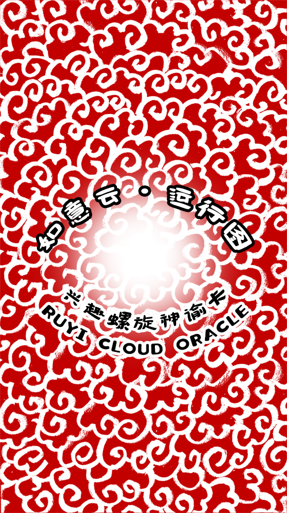

興趣螺旋神諭卡
順時推進，逆時調整。虛時養能，實時行動。
這套卡牌在做什麼？
這不是一套「預測未來」的卡牌，而是一套幫助你覺察當下狀態、調整行動節律的工具。
當你讀懂順逆、虛實、內外的節律，你就能用更少的力，做更對的事。
使用原則： 保持輕鬆、如實面對、每次只做一個小動作。卡牌的力量來自微小但正確的動作累積。
請選擇使用方式
請靜下心來
默念您的問題，準備好後點擊下方按鈕抽牌。

你的指引
點擊卡牌翻開，點擊下方按鈕查看詳細說明。
如意雲運行圖卡牌 · 完整說明書
一、產品名稱
如意雲運行圖 · 興趣螺旋神諭卡 （Ruyi Cloud Flow Oracle）
二、核心口號
順時推進，逆時調整。虛時養能，實時行動。內外對齊，萬事順流。
三、這套卡牌在做什麼？
這不是一套「預測未來」的卡牌，而是一套幫助你覺察當下狀態、調整行動節律的工具。
它基於「如意雲興趣螺旋模型」：你的生活與創造，其實一直在 順 / 逆 × 虛 / 實 × 內 / 外 的動態節律中流動。
當你讀懂節律，你就能用更少的力，做更對的事。
四、模型結構（簡單理解）
這套卡牌包含 16種狀態模型，由三組維度組成：
- 1. 順轉 / 逆轉（方向）
順轉：阻力小、自然、流暢。
逆轉：調整、轉向、釋放、重構。
👉 這不是好壞，而是節律切換。 - 2. 虛 / 實（節奏）
虛：感受、學習、靈感、休息、擴展。
實：執行、行動、輸出、落地、重複。
👉 這是能量的呼吸。 - 3. 內 / 外（場域）
內在場：你的興趣、情緒、意願、狀態。
外在場：環境、人際、任務、機會。
👉 這是你與世界的關係。
五、這16張卡在表達什麼？
每一張卡代表：你此刻的一個「最佳運行狀態」。
它不是命運，而是當下最合適的運行方式。
六、如何使用這套卡牌
- 方法一：每日一抽（最簡單）
每天早上或需要指引時：靜心幾秒，心中默念問題：「我此刻最適合的運行方式是什麼？」 抽出一張卡，閱讀卡面的一句話提示，然後照著去做。 - 方法二：問題指引抽卡
當你遇到問題時（例如：我該繼續推進嗎？我要不要休息？這段關係該如何處理？我是否在走對的方向？），抽一張卡，直接按提示行動。 - 方法三：雙卡法（進階）
抽兩張卡。第一張：內在狀態。第二張：外在狀態。觀察兩者關係：內外是否一致？是否需要調整節奏？
七、如何理解卡牌提示語？
每張卡都有一句話，例如：「順勢推進，直接行動就是最省力的路徑」
請這樣使用它：不用分析、不用解釋、不用懷疑。直接在生活中執行一個小動作（例如：寫一句話、打一個電話、整理一個角落、去休息10分鐘）。
卡牌的力量來自：微小但正確的動作累積。
八、四大狀態的總體理解
| 類型 | 核心含義 | 你的動作 |
|---|---|---|
| 順 × 實 | 順勢推進 | 去做 |
| 順 × 虛 | 擴展感受 | 放鬆打開 |
| 逆 × 實 | 轉向調整 | 換方式行動 |
| 逆 × 虛 | 修復整合 | 停下來 |
九、最重要的原則
這套卡牌最重要的不是「對不對」，而是：讓你回到自己的中宮興趣。
當你回到真正感興趣、有感覺、有生命力的狀態，你自然就會進入正確的節律。
十、關於「逆轉」的說明（重要）
很多人會誤解「逆轉」。請記住：逆轉不是失敗，而是系統在換擋。
它代表：需要休息、需要調整方向、需要釋放壓力、需要重建路徑。這是健康機制。
十一、關於「虛狀態」的說明
虛狀態不是懶惰。
它是：靈感準備期、能量積累期、系統整合期。
沒有虛，就沒有實。
十二、使用這套卡牌的正確態度
請帶著這三種心態使用：
① 輕鬆：不要神秘化。
② 真實：如實面對自己的狀態。
③ 行動：每次只做一個小動作。
十三、什麼時候不要使用卡牌？
如果你處於：極度情緒失控、嚴重身體不適、醫療或法律緊急情況。
👉 請先處理現實問題。 卡牌不是替代現實決策的工具。
十四、結束語
你的人生，本來就是一個不斷旋轉的如意雲。有時順，有時逆，有時擴展，有時收縮。
當你學會：在不同節律中與自己合作，你會發現：
你不需要更努力，你只需要 更順流。
十五、提醒
你已經在路上，這張卡只是提醒你此刻用哪一種方式繼續前進。